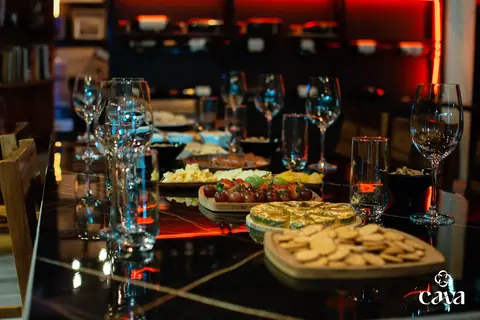

Gastronomía · Maridaje
Vino y gastronomía costarricense: cuando el contraste es más honesto que las reglas
Maridar vino con comida costarricense no necesita reglas. Solo hay que probar — y entender por qué el contraste funciona mejor que cualquier lista.